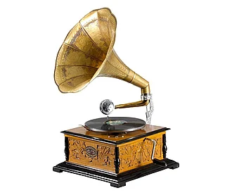
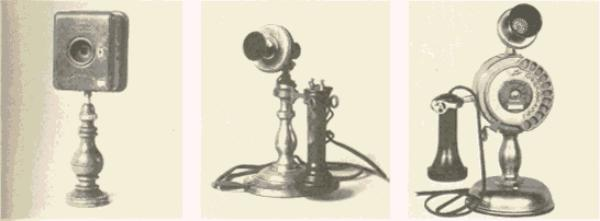
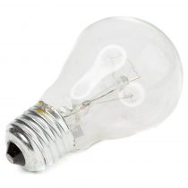

Kanadai találmányok
1. Kosárlabda
A kosárladát a kanadai születésű James Naismith találta fel 1891-ben.
2. Gramofon

1889-ben Alexander Graham Bell és Emile Berliner ötvözte.
3. Telefon

1876-ban találta fel Alexander Graham Bell.
4. Mogyoróvaj
A mogyoróvaj korai formáját 1884-ben szabadalmaztatta Marcellus Gilmore Edson.
5. Villanykörte

A nikkelből és vasötvözetből készült vezetőket Reginald A. Fessenden 1892-ben találta fel
Forrás: https://hu.eferrit.com/a-100-legjobb-talalmany-kanadaban-keszuelt/